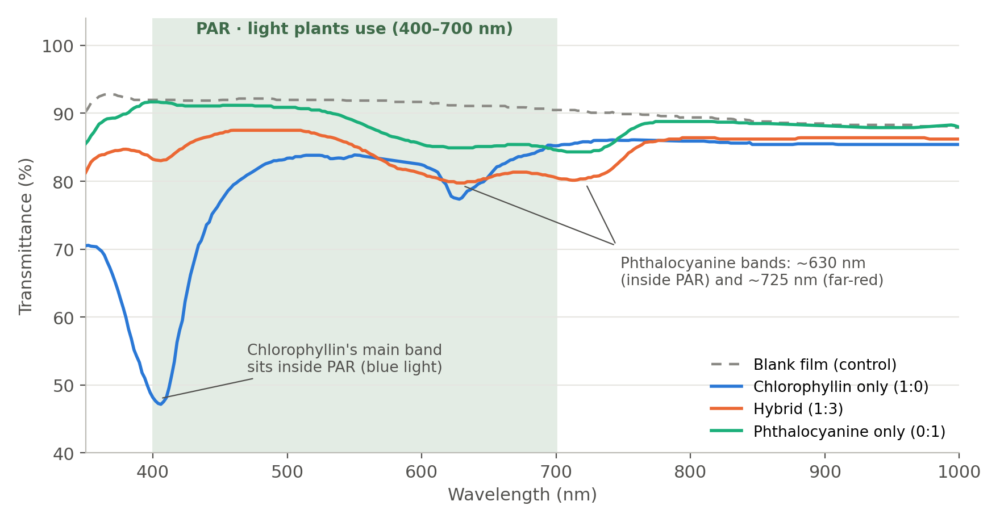

OSHN started because I wanted to make fresh food easier to get. My early designs leaned heavily on mechanical solutions. The more I developed them, the more complicated they got, and each version came with new concerns: water pressure, sanitation, maintenance, and how much energy the whole thing would use.
I started looking for ways to simplify it, and that's what eventually led me to materials. The question I'm working on now is whether the material surrounding the growing system could help generate energy without taking away the light the plants need.
Current focus · analysis of published data
How much crop light does a light-harvesting film take?
While I was reading into that question, I came across Donglu Shi's 2025 review on transparent, spectrally selective photovoltaics. One idea in it stuck with me: porphyrin-based materials that could let through the wavelengths plants use and harvest other parts of sunlight for energy. It sounded promising, but I didn't want to stop there. I wanted to see what the existing materials actually do to plant-usable light, so I went back to the published data underneath the review.
What I did
I went back to the original study. The hybrid spectra in Shi's review come from Lin et al. (2022), so I read that paper's methods. Their samples were copper chlorophyllin and copper phthalocyanine, spin-coated into thin films. One thing I noticed along the way: in their Fig. 2, the panel letters appear swapped relative to the caption, so I used the panel whose spectra match the text.
I pulled the values from the published figure. The raw spectral data weren't available, so I extracted the measured transmittance of each film from the plot itself. To check the extraction, I compared it to numbers the paper reports. My readings reproduce its visible transmittance (85% for the films, 90% for the blank film) within 2–3 points.
I looked at the light from the plant's perspective. I weighted every wavelength by real sunlight (ASTM G173, AM1.5G) and split it into the light plants use for photosynthesis (PAR, 400–700 nm) and everything outside it (350–399 and 701–1000 nm). Then I compared each film to the blank film, so only the dye's effect counts.

Measured film transmittance from Lin et al. (2022), Fig. 5b, re-plotted from extracted values. The shaded band is PAR. Three of the six films are shown; all six are in the table.
Film (chlorophyllin : phthalocyanine)
Plant light blocked
Other light captured
Share of absorbed light that plants use
1 : 0 (chlorophyllin only)
13%
5%
71%
1 : 0.5
11%
6%
65%
1 : 1
9%
4%
68%
1 : 2
8%
4%
67%
1 : 3
9%
5%
66%
0 : 1 (phthalocyanine only)
4%
2%
71%
"Plant light blocked" is the share of sunlight's PAR photons the dye removes. "Other light captured" is the share of photons outside PAR it absorbs. The last column is how much of everything the dye absorbs falls inside PAR.
What I found. The tradeoff was bigger than I expected. In every film, roughly two-thirds of the light the dye absorbs is light plants use. Chlorophyllin's strongest absorption is in the blue, and phthalocyanine has a strong band around 630 nm in the red. Both of those sit inside PAR.
Lin et al. developed these films for transparent windows and heat generation, not for crops, and I'm working from their published measurements, not films I made or tested myself. For OSHN, these particular films don't solve the problem yet. The material I'm looking for would need to move more of its absorption outside 400–700 nm, below 400 nm or above 700 nm, and leave more of the plant-usable light alone.
What's next
That result gave me my next question: can a hybrid's absorption be predicted from the absorption of its two ingredients? If it can, I can use that relationship to screen other porphyrins and phthalocyanines for combinations that absorb further into the far-red and near-infrared and leave more PAR for the plants. That's the next thing I'm testing.
Limits
Values were read from a published figure, not raw data (about ±0.5 percentage points of transmittance).
Covers 350–1000 nm. Below 350 nm the glass itself absorbs.
Absorbing light is not the same as producing electricity; nothing here estimates power output.
The films absorb only a little light overall, so reading errors matter most for the weakest absorber (0 : 1).
Sources
Shi, D. "Three-Dimensional Solar Harvesting with Transparent Spectral Selective Photovoltaics in Agrivoltaics." Energies 18, 1788 (2025). doi:10.3390/en18071788
Lin, J.; Wang, Y.; Lyu, M.; Deng, Z.; Shi, D. "Transparent porphyrin-based hybrid films for spectral selective solar harvesting and energy generation." Sol. Energy Mater. Sol. Cells 243, 111788 (2022). doi:10.1016/j.solmat.2022.111788
McCree, K. J. "The action spectrum, absorptance and quantum yield of photosynthesis in crop plants." Agricultural Meteorology 9, 191–216 (1972).
ASTM G173-03 reference solar spectrum (AM1.5 global).
Anthropic. Claude [AI assistant] (2026). claude.ai. Used to help extract values from the published figure, write the analysis code and the figure, and edit the wording on this page.